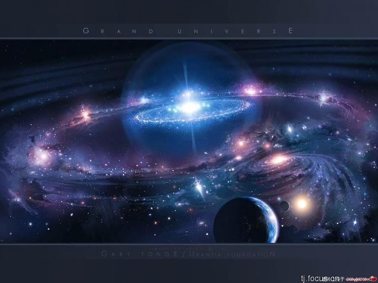
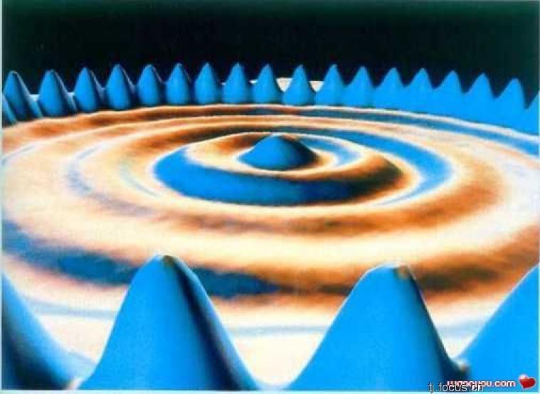
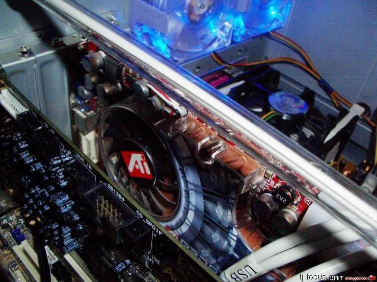
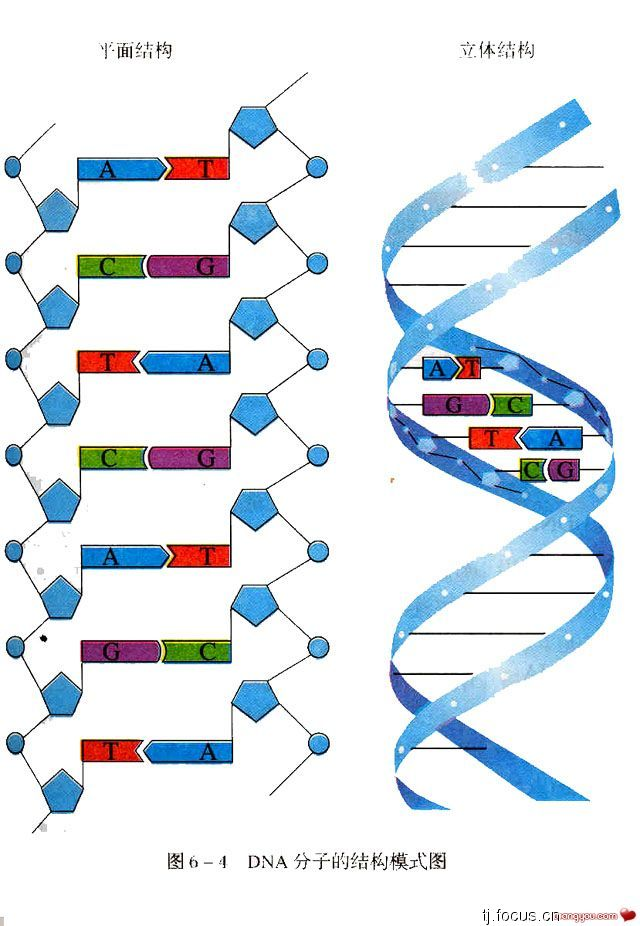
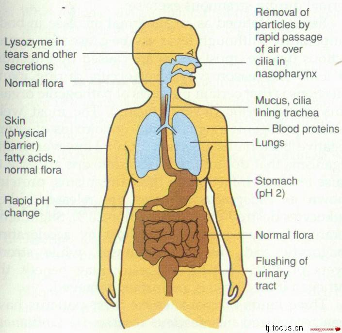

2007年08月12日 星期日 04:14 A.M.
20个等待你用想象力先行解决的科学问题
关于宇宙、关于地球、关于我们自身，有太多的谜题等待我们去挖掘。但哪些是最重要的未解之谜，我们距离找到答案还有多远？今年7月1日，在纪念
美国
《科学》杂志创刊125周年之际，科学家们总结出了125个迄今我们还不能很好回答的问题。有博主总结了以下20个。也许用科学解决它们还需要十分漫长的时间，但这20个未解决的问题恰好为我们提供了宽广的想象空间。如果能以其中某个问题展开想象，写出一篇科幻小说，一定会非常好看吧。
[原文题目：《20个迄今为止不能回答的科学问题》]
1、宇宙是由什么组成的？
一个脱口而出的答案是：由那些亮晶晶的星星组成的。但在最近几十年中，科学家越来越发现这个答案是不正确的。天文学家认为，组成恒星、行星、星系——当然还有我们——的物质，或者叫普通物质，只占宇宙总质量的不到5％。他们估计，另外25％，可能是由尚未发现的粒子组成的暗物质。剩下的70％呢？天文学家认为那可能是暗能量——让宇宙加速膨胀的力量。
暗物质和暗能量的本质是什么？科学家正在用加速器和望远镜寻找这些问题的答案，如果找到了，其意义肯定是宇宙级的。
http://tjimg.focus.cn/upload/photos/30680/Km6M4JAN.jpg
2、我们在宇宙中是唯一的吗？
40多年以前，一场地球科学的革命发生了。板块构造学说更新了关于地球自身的知识。但是关于地球内部构造的问题，仍然沿袭着革命之前的知识。科学家在这 40年中所做的，就是把这个鸡蛋模型——分为地壳、地幔和地核进一步细化。借助于越来越先进的地震波成像技术，科学家正在研究地球这个庞大机器的运作过程。但是要掀起另一场科学革命，可能还需要半个世纪。
4、地球温室将变得多热？
苹果落向地面、一道闪电划过长空、核电站反应堆里的铀原子衰变同时放出能量，超级加速器击碎质子：这几种现象代表着自然界中四种基本力的作用，也就是引力、电磁力、弱力和强力。宇宙间所有的物理现象都可以用这四种基本力进行解释。但是科学家并不满足。有没有可能把这四种力统一成为一种？上个世纪60年代，物理学家发现弱力和电磁力是可以统一起来的，它们是一种事物的不同侧面，统称电弱力。但是其余两种力是否可以和它统一起来？
http://tjimg.focus.cn/upload/photos/30680/C8aIKh7h.jpg
6、在量子不确定性和非定域性之下，还有更深层次的原理吗？
量子理论已经诞生了100年有余，它产生了令人信服的应用成果，但是它也带来了反直觉：量子力学的不确定原理指出我们无法同时精确地获得一个物体的动量和位置。而非定域性让两个处于量子纠缠态的粒子的纠缠态同时崩溃，而不管它们相距多远。爱因斯坦就说过，尽管量子力学给他留下了非常深刻的印象，但是“一个内心的声音告诉我，它还不是真实的东
7、我们能把化学自我装配推进多远？
在某种意义上，化学家是最喜欢发明的一群人，因为他们总是不断制造出新型的分子。尽管今天的化学家已经能制造出很复杂的化学结构，他们能让这项工作变得既简单又复杂吗？也就是说，让“原料”原子自己“装配”成复杂的结构，就像生命所表现出来的那种自我装配的特性。已经有一些化学自我装配的实例，例如制造类似细胞膜的双层膜结构。但是更高级的自我装配，例如自下而上地制造集成电路，仍然是一个梦想。
8、传统计算的极限是什么？
有些事看上去很简单但是解决起来很复杂，例如一个推销员要走遍相互连接的几个城市，那么怎样走才能实现总路程最近？城市数量的增加会让最强大的电子计算机也感到畏惧。上个世纪40年代，信息论之父香农提出了信息（以比特方式存在）储存和传递所遵循的物理规律。任何传统的计算机都不能超越这个规律。那么，在工程上，最终我们能造出多么强大的计算机？不过，非传统的计算机可能并不受到这些限制，例如近年来兴起的量子计算机。
http://tjimg.focus.cn/upload/photos/30680/x2Ewbw8Y.jpg
9、意识的生物学基础是什么？
17世纪的法国哲学家有一句名言：“我思故我在”。可以看出，意识在很长时间里都是哲学讨论的话题。现代科学认为，意识是从大脑中数以亿计的神经元的协作中涌现出来的。但是这仍然太笼统了，具体来说，神经元是如何产生意识的？近年来，科学家已经找到了一些可以对这个最主观和最个人的事物进行客观研究的方法和工具，并且借助大脑损伤的病人，科学家得以一窥意识的奥秘。除了要弄清意识的具体运作方式，科学家还想知道一个更深层次问题的答案：它为什么存在，它是如何起源的？
http://tjimg.focus.cn/upload/photos/30680/26scrFMd.jpg
10、什么控制着器官再生？
有一些生物拥有非凡的修复本领：被切断的蚯蚓可以重新长出一半身体，而蝾螈可以重建受损的四肢……相比而言，人类的再生本领似乎就差了一点。没有人可以重新长出手指，骨头的使用也是从一而终。稍可令人安慰的是肝脏。被部分切除的肝脏可以恢复到原来的状态。科学家发现，那些可以让器官再生的动物，在必要的时候重新启动了胚胎发育时期的遗传程序，从而长出了新的器官。那么人类是否可以利用类似的手法，在人工控制下自我更换零部件呢？
11、一个皮肤细胞如何能变成神经细胞？
在上个世纪中期，生物学家把青蛙的体细胞核放入青蛙的去核卵细胞里，结果制造出了克隆蝌蚪。最近几年，关于人类胚胎干细胞的研究正在热火朝天地进行—— 把人的体细胞核放入卵细胞中，科学家期待着制造出各种各样的人类体细胞，例如神经细胞、成骨细胞、心肌细胞等等。尽管科学家已经取得了一些成功，他们仍然对于这种体细胞核移植技术能够成功的原因知之甚少。的确，去核的卵细胞在这个过程中扮演着至关重要的角色——可是具体机制是什么？
http://tjimg.focus.cn/upload/photos/30680/40ybRZFT.jpg
12、一个体细胞是如何变成整株植物的？
在某种意义上，植物似乎比动物有更大的灵活性。植物的体细胞不需要繁琐的体细胞核移植技术，就能重新变成植物胚胎细胞。科学家很早就已经开始利用植物的这种性质。用一小块植物组织，在实验室里就能培养出可以供一片森林使用的幼苗。但是为什么植物细胞有这样的灵活性？科学家已经发现了一些线索，例如植物的生长素在这个过程中起到的作用。
13、生命是如何以及在哪里起源的？
科学家已经发现了34亿年前的微生物的化石，在更古老的岩石上也能找到生物光合作用的痕迹。那么蛋白质和DNA——生命的两大支柱——哪一个先出现在地球上？或者一起出现？科学家认为，更可能的情况是，RNA比前两者更早出现。另一个问题是，生命在什么样的环境下起源？一种假说认为，生命最早起源于海底的热水中。如今，科学家一方面在实验室里探寻从简单有机物到可以自我复制的有机物的发展过程，另一方面，研究彗星和火星，也将为这个问题带来重要的启示。
http://tjimg.focus.cn/upload/photos/30680/4ZQvaWAE.jpg
14、什么决定了物种多样性？
这是一个充满生命的行星，但是并非每一个角落的生命都同样繁荣。一些地区居住的物种的数量超过其他地区。热带比寒带拥有更高的物种多样性。为什么会出现这种情况？仅仅是因为热带比寒带更热？科学家认为，生物和环境之间的相互作用对多样性起着关键的作用。当然，还有其他一些改变多样性的力量，例如捕食和被捕食的关系。但是，科学家首先面临的问题是如何获取关于全球物种多样性的基础数据——到底有多少种生物在那儿。
15、合作的行为如何进化？
你很容易在
社会
性动物身上看到利他的行为。例如蜜蜂把食物的信息传递给其他蜜蜂。人类和其他灵长类动物社会也充满了合作的行为。进化论的创立者达尔文对合作现象提出过一些解释，例如亲属之间的相互帮助，实际上会促进整个家族繁殖的可能性。如今，科学家正在寻找合作行为的遗传基础。而博弈论——一种关于竞争、合作和游戏规则的数学理论，也能够帮助科学家理解合作行为如何运作。达尔文观察到了合作的现象并做出了解释，今天的科学家希望能够让这个解释更加深入，并且希望能够回答它是如何产生的。
http://tjimg.focus.cn/upload/photos/30680/dhS7gO1i.jpg
16、如何从大量的生物学数据中得到全景？
生命是如此的复杂，以至于几乎每一位生物学家都只能在一个很小的领域进行探索。尽管在每一个领域都产生了大量的描述性的数据。但是科学家能够从这些海量的数据中得出一个整体的概念，例如生物是如何运作的？系统生物学这门正在形成的学科为回答这些问题提供了一些希望。它试图把生物学的各个分支联系起来，利用数学、工程和计算机科学的方法让生物学更加量化。不过，现在还没有人知道这些方法是否能够最终让科学家理解生物运作的整体图景。
17、为什么人类的基因这么少？
2003年，当人类基因组计划接近完成的时候，生物学家在欢呼这一成就的同时，惊奇地发现人类的基因数量比原先估计的少，是的，人只有大约2.5万个，而原来认为应该有10万个。相比之下，一种非常简单的生物——线虫也有2万个基因。拟南芥植物的基因数量比人类稍多，而水稻的基因数量则是人类的一倍。科学家认为，基因组运作的方式应该比以前认为的更加灵活和复杂，他们正在探寻这些少用基因多办事的分子机制。
18、遗传差异和个体健康在多大程度上是相关联的？
很早以前科学家就发现有些人对于某些药物的反应和其他病人不同。例如，某种麻醉用肌肉松弛剂会导致特定的人无法呼吸，最终，科学家发现这种现象的原因在于他们拥有特定的基因。这也就带来了一个问题：研究不同的人之间的遗传差异是否可以促进医学发展出更高级的治疗手段，也就是说，根据个人的DNA进行“量体裁药”？科学家已经辨认出了一批与药物相互作用的基因。但是要真正实现“量体裁药”，恐怕还为
时尚
早。
http://tjimg.focus.cn/upload/photos/30680/nD35l8Jy.jpg
19、人类寿命可以延长多少？
尽管百岁老人仍然少见，人类的平均寿命（尤其是在发达国家）在过去的几十年中一直在延长。但是这种趋势能保持多久？科学家通过对实验动物的研究，发现包括限制热量摄入在内的一些方法可以显著地延长它们的寿命。但是这些方法是否可以成功地应用到人类的身上，以及能延长多少寿命呢？一些科学家认为，至少人类活到100岁可以成为家常便饭。不过，即使是这样，长寿也会带来其他的麻烦，比如社会保险。
20、什么遗传差异导致我们成为独特的人类？
随着基因测序技术的改进，越来越多物种的基因组全序列进入了科学家的数据库中，包括我们自己和数种灵长类亲戚，比如黑猩猩。我们很容易分辨出人和黑猩猩，然而在分子水平上，这种分辨却不那么容易。我们和黑猩猩的DNA差异大约是1.2％。这是一个很小的数字，但是从绝对数量上来看，这种差异意味着3千多万个碱基对的不同。到底是这3千多万个差异中的哪些，让我们在与黑猩猩“分家”之后，变得如此独特？科学家正在寻找那些让我们有别于其他灵长类物种的遗传差异，当然，还有
文化
、语言和技术等等超越基因的因素。